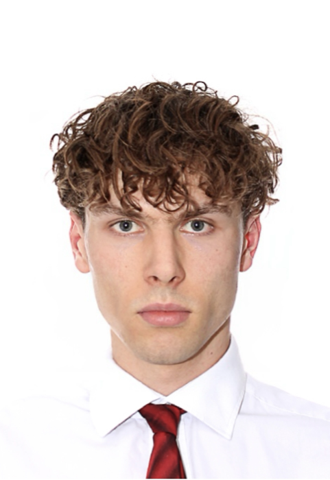

We shoot, edit & build digital presence for wrap, PPF and detailing studios — content that turns views into bookings

I'm Matt.
I shoot and edit content for wrap, PPF and detailing shops — the kind of videos that make people stop scrolling and actually book a visit.
I come to your shop, film the process and the reveal properly, and edit it into something that looks like your actual skill level, not a rushed clip.
5+ years in visual design, art direction, and photography. Degree in Visual Communication with honors, background in video production — so filming, editing, and your website if you need one, come from one person with one consistent style, not five different freelancers.
Most shoots run 2-4 hours on site, depending on how many vehicles or angles we're covering. We work around your shop hours so it doesn't get in the way of business.
Just access to the shop and a heads-up on what you'd like featured — a specific build, a reveal, or just day-to-day work. Everything else is on us.
Delivered within 5-7 business days of the shoot. Rush turnaround available on request.
By default, you get finished, ready-to-post files — you control when and how they go up. Posting and captions can be added on if you'd rather hand that off completely.
Single shoot days start around $350-500. Full packages with a brand film and website start around $2,500-4,000. Reach out with what you need and I'll send exact pricing.
Yes — most shops book monthly or quarterly to keep content fresh. Recurring clients get priority scheduling.